Configure Kdenlive¶
Misc¶
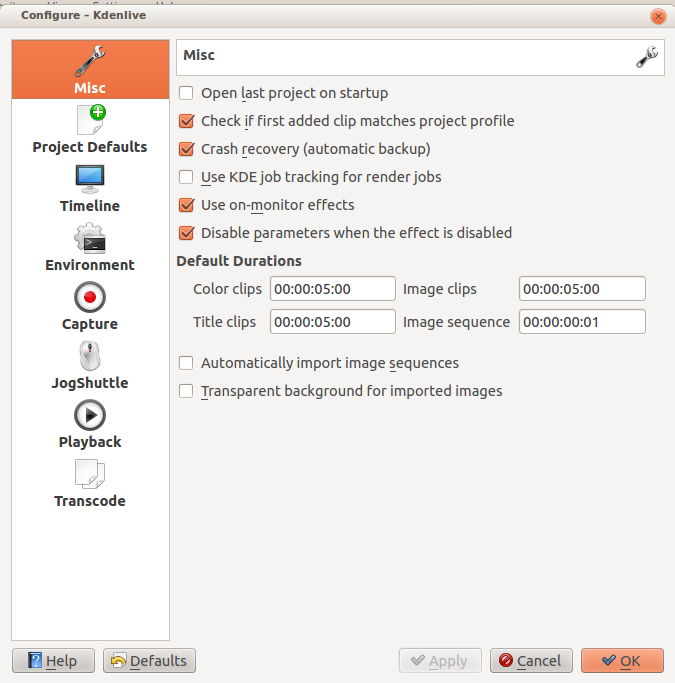{kind=link}
Open the last project on startup
Check if the first added clip matches the project profile
Crash recovery (automatic backup)
Use KDE job tracking for render jobs
Use on-monitor effects
Disable parameters when the effect is disabled
Default Durations
Automatically import image sequences
Transparent background for imported images
Project Defaults¶
Configures what the project settings will look like by default when you choose File>:ref:new.
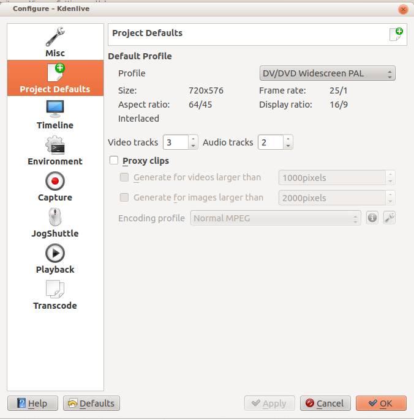{kind=link}
Timeline¶
Configure how the timeline appears in Kdenlive
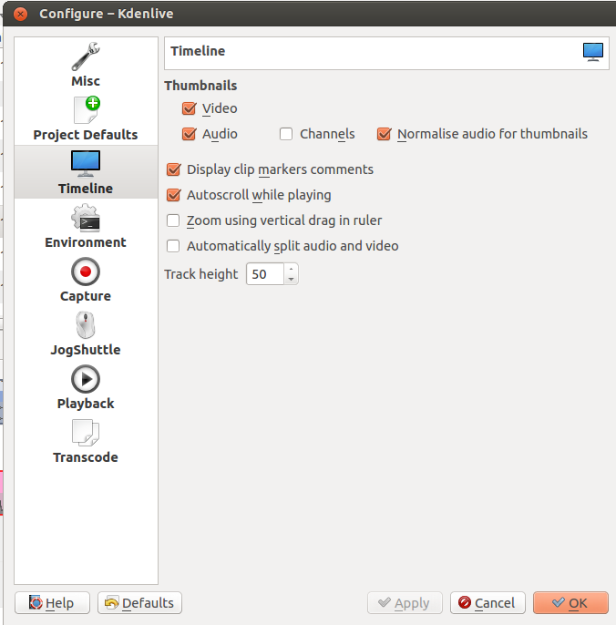{kind=link}
Thumbnails - video - Turns on editing by default.
Thumbnails - Audio - Turns on editing by default.
Normalize audio for thumbnails
Channels (ver 0.9.10) - if checked you will get a separate waveform in the audio thumbnail for each audio channel in the audio track. If unchecked you will get a single waveform as the audio thumbnail.
Display clip markers comments - Turns on editing by default.
Autoscroll while playing
Zoom using vertical drag in the ruler
Automatically split audio and video - tracks will automatically have the video and audio portions split into a video and audio track when they are dragged from the project tree to the timeline; i.e., this setting will cause Kdenlive to automatically do what the Clip Menu function on the Clip Menu does.
Track Height - defines the default track height in pixels for the tracks on the timeline.
Environment¶
MLT Environment¶
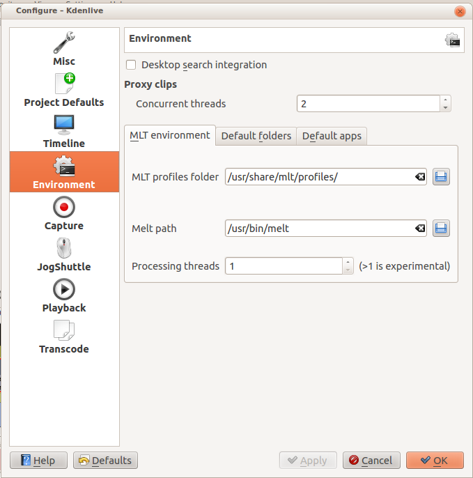{kind=link}
Paths on Windows |
This setting tells Kdenlive where to find the MLT executables and profile files. Only advanced users would really need to change these settings. Kdenlive is basically a front end to the MLT program and this setting tells Kdenlive where to find the engine that runs the whole application.
Proxy Clips - Concurrent Threads This will set the number of threads the program will attempt to use when calling ffmpeg to encode Clips. This will be what kdenlive passes to the ffmpeg -threads parameter. Increasing this parameter may not have an effect if you have changed the proxy encoding settings using Project Settings Dialog to a codec that ffmpeg does not do multi-thread on. ( Multi-threading is supported for MPEG-2, MPEG-4, H.264, and VP8)
Processing threads: This is experimental and was removed in ver 0.9.10. This number was passed to melts real_time consumer property. This parameter increases the number of threads the program uses for video decoding and processing (but not encoding which is controlled via render). See mlt doco. Using this has potential side effects - see this forum post from the author of the Melt program.
If you want to experiment with multi threading in versions higher than 0.9.10 you could add something like “real_time=-4” to a custom render profile. And yes that is a minus 4 in the example - as per the mlt doco - numbers <0 implement threading without dropping frames.
Default Folders¶
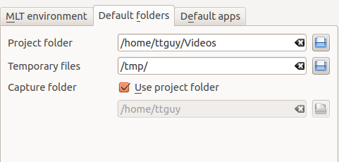This setting controls where Kdenlive expects project files to be by default. It also controls what folder Kdenlive will use as a temporary file storage location and it controls where files captured from an external source will be saved.
Default Apps¶
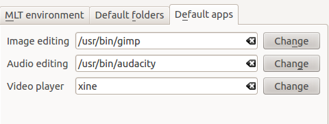This setting controls what application opens when you choose Edit Clip for a clip in the project tree. Note there is no application for video editing - because Kdenlive is a video editor. Images and audio files are edited by the external applications defined here. The video player is used by the DVD wizard previewer.
Capture¶
Note
At least Firewire capture was removed in porting to KDE 5 due to lack of manpower.
Configure the Capturing Video devices (Firewire, FFmpeg, Screen Grab, Blackmagic) from this section.
Configure Firewire Capture¶
The image shows the Configure Firewire capture tab which can be accessed from the menu or from the spanner icon in the Capturing Video
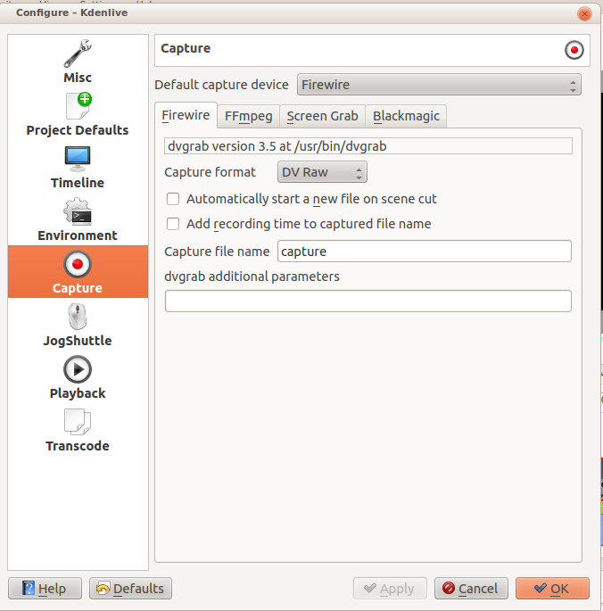{kind=link}
The firewire capture functionality uses the dvgrab program. The settings applied here to define how dvgrab will be used to capture the video.
Capture Format options are * DV RAW * DV AVI Type 1 * DV AVI Type 2 * HDV
The first three are quality-wise the same (exactly the same DV 25Mb/s standard definition codec), just packed differently into the file. Type 2 seems to be the most widely supported by other applications.
The raw format contains just the plain video frames (with audio interleaved) without any additional information. Raw is useful for some Linux software. Files in this format can also be played with Windows QuickTime when renamed to file.dv .
AVI files may contain multiple streams. Typically, they include one video and one audio stream. The native DV stream format already includes the audio interleaved into its video stream. A type 1 DV AVI file only includes one DV video stream where the audio must be extracted from the DV video stream. A type 2 DV AVI file includes a separate audio stream in addition to the audio data already interleaved in the DV video stream. Therefore, the type 2 DV AVI file is redundant and consumes more space.
HDV is a high-definition format used on tape-based HD camcorders.
Add recording time to captured file name* option: If this is unchecked then each captured file will get a sequential number post-pended to the file names listed in the Capture file name setting. With this checked, date and timestamp (derived from when the footage was captured) is post-pended to the capture file name, e.g. capture2012.07.15_11-38-37.dv
Automatically start a new file on scene cut* option: With this checked it tries to detect whenever a new recording starts, and store it into a separate file. This is the -autosplit parameter in dvgrab and it works by detecting timecode discontinuities from the source footage. Where a timecode discontinuity is anything backward or greater than one second it will start a new capture file.
The dvgrab additional parameters edit box allows you to add extra dvgrab switches to the capture process that will run. See dvgrab manual for more info.
Configure Screen Grab Capture¶
This shows the configure tab for screen grab in ver 0.9.3 of Kdenlive. It will be different in ver. 0.9.2 because that version used Record My Desktop to do the screen capture.
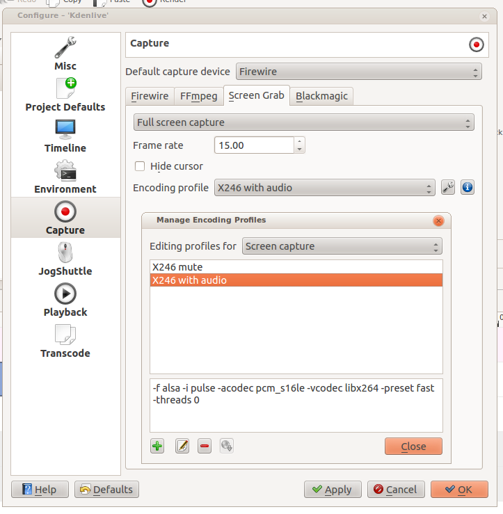{kind=link}
Jog Shuttle¶
Configure a connected Jog-Shuttle device. Contour ShuttlePro and Contour ShuttleXpress are known to work.
Linux¶
Ensure that your Jog-Shuttle device is connected via USB and working. An udev rule is necessary to correct the access rights to the device file: Create a file /etc/udev/rules.d/90-contour-shuttleXpress.rules with the line:
SUBSYSTEMS"usb", ATTRS{idVendor}
Contents
“0b33”, ATTRS{idProduct}==”0020”, MODE=”0444”
for Contour ShuttleXpress or
SUBSYSTEMS"usb", ATTRS{idVendor}
Contents
“0b33”, ATTRS{idProduct}==”0030”, MODE=”0444”
for Contour ShuttlePRO V2. Obtain the device file by a command
fgrep Contour -A4 /proc/bus/input/devices
The last line of the output says
H: Handlers=mouse0 event3
which should tell the device file to be entered into kdenlive’s setting dialog: In the text field enter /dev/input/event3 (use the last word on the line above to specify the device file in /dev/input), set the buttons and apply the changes.
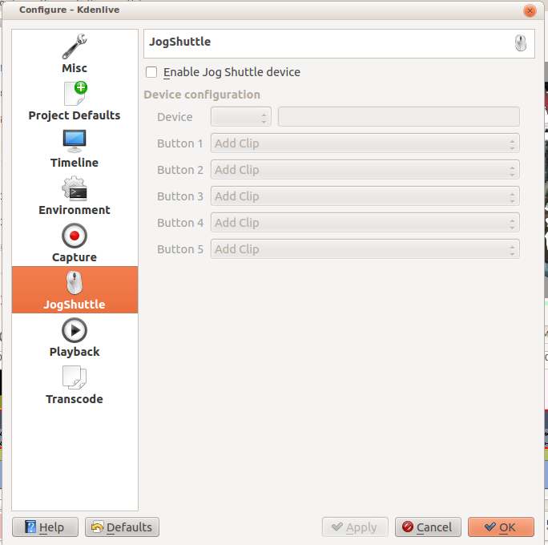{kind=link}
Enable Jog-Shuttle. For the Contour ShuttleXpress the buttons 5 - 9 are relevant, whereas Contour ShuttlePro uses all buttons. The actions for the jog- and the shuttle wheel are working as expected.
Windows¶
On the desktop, bottom-right opens the system tray. Right-click on the Contour icon and choose “Open control Panel”.
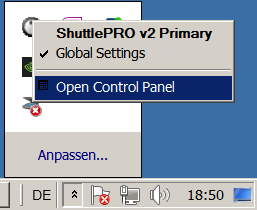In the configuration window choose under “Application setting” the program “Adobe Premiere Pro CS&CC (Edit)”. Then click on .
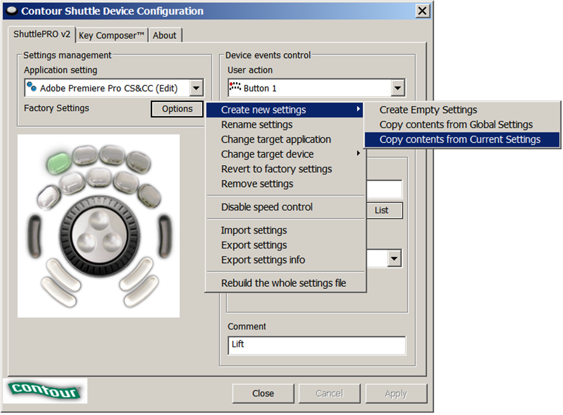Then choose Kdenlive.exe in C:Program Fileskdenlivebin.
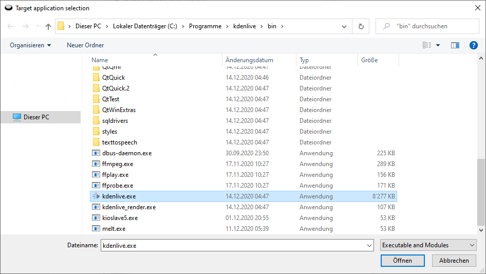Now the basic functionality should work. Adjust the buttons of the shuttle with shortcuts as you like. .. hint:
You can make Kdenlive settings from scratch using :menuselection:`Options --> Create new settings --> Create Empty Settings` when creating new settings.
Playback¶
Configure the Video and Audio drivers and devices. For advanced users only.
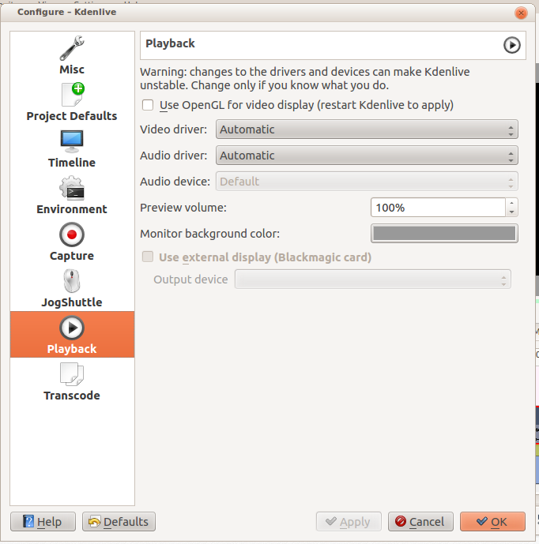{kind=link}
In version 0.9.4 of Kdenlive, checking the “use Open GL for video playback” checkbox turns on the ability to have audio scrubbing available for use in the clips. Audio scrubbing lets you hear the audio at the playhead position as you drag the playhead so you can quickly find a particular sound or event in the audio. This feature can be useful for placing the play head at the correct spot in the clip relative to an important bit of audio.
In ver 15.04 or higher, there is no “use Open GL for video playback” checkbox - Open GL is used by default.
Transcode¶
This controls the Transcode Menu Item functionality. The parameters section are ffmpeg parameters. Find help on them by issuing ffmpeg -h at a command line.
{kind=link}
Transcode Options¶
Option |
Description |
Parameters |
Meanings of Parameters |
|---|---|---|---|
Wav 48000Hz |
Extract audio as WAV file |
-vn -ar 48000 |
-vn=disable video, -ar 48000 = set audio sampling rate to 48kHz |
Remux with MKV |
-vcodec copy -acodec copy -sn |
copy the video and the audio. -sn = disable subtitles |
|
Remux MPEG-2 PS/VOB |
Fix audio sync in MPEG-2 vob files |
-vcodec copy -acodec copy |
copy the video and the audio |